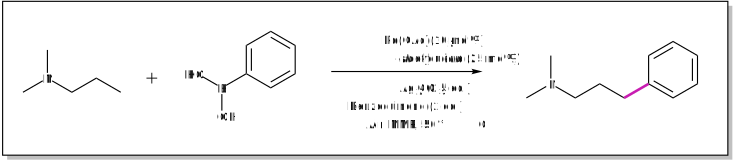
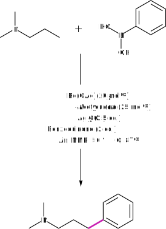
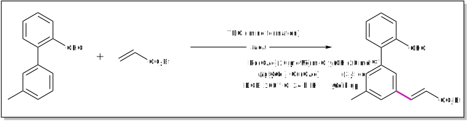
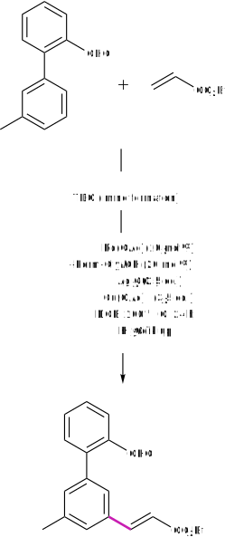

Journal club
Reviewing literature
The evolution of High-Throughput Experimentation in the pharmaceutical industry
Reviewed on 6th April 2021
The past decade has also witnessed the extension of HTE principles toward the realm of small-molecule process chemistry. Steven M. Mennen and co-workers
With the demands of pharmaceutical companies for novel reaction discovery and efficient routes to active bioactive molecules, High-Throughput Experimentation (HTE) is becoming an increasingly useful tool to meet these demands. In HTE, many reactions are performed in parallel resulting in an array of data in a short space of time.
This article provides an insight into the most common reaction types screened by the major pharmaceutical companies using HTE as well as several case-studies showcasing the success of this method in industry.
Intriguingly, biocatalysis is the most common reaction type screened with transformations including transaminases and hydrolases. Considering chemical transformations, metal-catalysed coupling reactions are prevalent. Suzuki-Miyaura reactions are at the top of the board followed by Buchwald-Hartwig aminations.
Also, there is a significant difference in the uptake of Pd-catalysed or Cu-catalysed coupling reactions within HTE programmes at different companies. Presumably, cost, ease of metal removal and environmental concerns are some of the factors involved in favouring one transition metal over another.
Staying on the theme of transition metal catalysed reactions, the article highlights the absence of Pd-catalysed C–H activation reactions in HTE – currently a hot-topic in academia. However, it is suggested that in the next 3-5 years, this will be one of the most frequently employed transformations in HTE.
In summary, HTE in the pharmaceutical industry continues to be a worthwhile investment with the benefits continuing to grow. Improvements to the speed of data generation and rapid interpretation of results has made this an important tool in the pharmaceutical tool-box.
Org. Process Res. Dev. 2019, 23 (6), pg. 1213–1242. DOI link: 10.1021/acs.oprd.9b00140
Catalytic C(sp3 )–H bond activation in tertiary alkylamines
Reviewed on 26th March 2021
The reaction can use both simple and complex starting materials to produce a range of multifaceted γ-aryl tertiary alkylamines and can be rendered enantioselective. Matthew J. Gaunt and co-workers
Utilising a tertiary alkylamine motif to couple an arene substrate via a metal-catalysed δ-C(sp3)-H activation protocol has been an unresolved problem until now.
For many existing metal-catalysed functionalisation reactions, a tailored functional group is required to position the metal at the correct location of a specific C–H bond. However, the use of these functional groups, termed Directing Groups (DGs) require overall longer synthetic routes due to installing and removing them from the molecule of interest. Many existing DGs also require harsh conditions to remove.
In this article, the above drawbacks of using traditional DGs is avoided by the use of a native functional group, a tertiary amine already present in the molecule.
However, using an alkylamine could lead to unwanted β-hydride elimination to occur on the alkyl backbone. Gaunt and co-workers avoided this deleterious pathway by employing a mono-protected amino acid. It was rationalised that this ligand favoured the C–H activation pathway by distorting the co-planar geometry necessary for β-hydride elimination.
Considering the substrate scope, a range of (hetero)aryl boronic acids could be used as the coupling partner. The scope of the amine component was also very broad with several tertiary amines tolerated including both acyclic and cyclic scaffolds. An example of this transformation is shown below.


Moreover, this protocol was successfully applied to the late-stage functionalisation of bioactive compounds. Impressively, an enantioselective transformation was also developed with up to 90% e.e.
In summary, a C–H arylation protocol using tertiary alkylamines has been developed. This method has the potential for modifiying tertiary alkylamine containing pharmaceutical compounds, of which there exists plenty. As a result, novel bioactive chemical space can be explored with little chemical effort.
Nat. Chem. 2020, 12, pg. 76–81. DOI link: 10.1038/s41557-019-0393-8
Imine as a linchpin approach for meta-C–H functionalisation
Reviewed on 20th March 2021
Despite the widespread applications of C–H functionalisation, controlling site selectivity remains a significant challenge. Debabrata Maiti and co-workers
The use of covalently attached DGs for selective C–H functionalisation has been extensively explored but there exist limitations to this methodology including the need of longer synthetic routes. However, a non-covalent temporary DG (TDG) could deliver the same site selectivity in less synthetic steps.
Maiti and co-workers have pioneered a novel TDG that achieves this. The TDG binds to the substrate reversibly and coordinates to a metal centre, bringing the metal near to the desired C–H bond. While several DG motifs were examined including nitriles and quinolines, it was found that pyrimidine-based templates were the most promising. An example of this transformation is shown below.


When performing reaction optimisation, the article comments that the commonly used solvent for C–H activation, HFIP had to be discarded as it can lead to imine decomposition. However, the solvent DCE could be substituted for HFIP while retaining good yields. From a health perspective, DCE should best be avoided due to its acute toxicity.
Analysing the scope of this olefination protocol, a diverse range of coupling partners was possible including short-chain and long-chain olefins. Natural products appended with acrylates including testosterone derivatives were well-tolerated signifying the potential use of this procedure in a pharmaceutical setting. For the corresponding aromatic substrate, electron neutral, electron-donating and electron-withdrawing aryl systems could all be olefinated at the meta position with good regioselectivity.
In summary, a temporary DG was developed that can achieve meta-C–H olefination without the need to install or remove a DG in two separate steps. This protocol has the potential for pyrimidine-based TDGs to be used for other C–H functionalisations such as allylation and alkynylation transformations.
Nat. Commun. 2021, 12, 1391. DOI link: 10.1038/s41467-021-21633-2